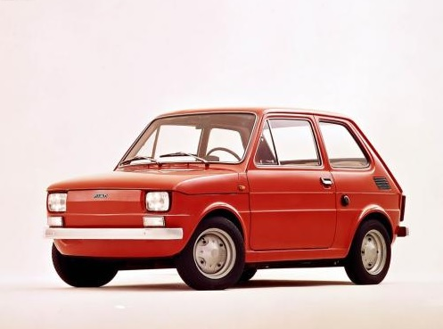
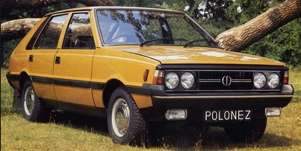

Fiat 126p
 Fiat 126p był samochodem osobowym małolitrażowym, produkowanym w Polsce na licencji w latach 1973-2000. Polska wersja licencyjna produkowana była przez Fabrykę Samochodów Małolitrażowych „Polmo” Bielsko-Biała w Bielsku-Białej oraz w Tychach. Swojego czasu najpopularniejsze auto w Polsce. W sumie wyprodukowano 3 318 674 sztuk w naszym kraju. W całym okresie produkcji Fiata 126p do jego napędu zastosowano trzy jednostki napędowe. Wszystkie benzynowe, choć prowadzono także próby z silnikiem wysokoprężnym. Do 1978 r. Mały Fiat był napędzany jednostką napędową o pojemności 0,6 l i mocy maksymalnej 23KM. Od roku 1977 pojemność jednostki napędowej wzrosła do 0,65 l, a moc o 1KM. Największa jednostka napędowa o pojemności 0,7 l stosowana była w wersji BIS. Samochód wyposażony był w hamulce hydrauliczne, bębnowe. Przestrzeń bagażowa kształtowała się w granicach 100 litrów. Dane techniczno-eksploatacyjne modelu 126p:
- Typ silnika: 126 A1 (Fiat 126 Bis - 126A2)
- Cykl pracy: czterosuwowy, z zapłonem iskrowym
- Liczba i układ cylindrów: 2, układ rzędowy, pionowy (Bis - poziomy)
- Pojemność całkowita: 652 cm3 (Bis – 703 cm3)
- Moc maksymalna: 17,7 kW (24,2 KM) , dla modelu Bis 18,5 kW (25,2 KM)
- Stopień sprężania: 8,6
- Prędkość maksymalna: 105 km/h, Bis - 120 km/h
- Masa pojazdu: 600 kg, Bis 645 kg
- Hamulce: hydrauliczne, bębnowe działające na 4 koła
- Średnie zużycie paliwa 7 l/100 km
Polonez MR78
 FSO Polonez był samochodem osobowym produkowanym przez Fabrykę Samochodów Osobowych od 1978 do 2002 roku w Warszawie. Przez cały okres produkcji samochód poddawany był wielu modyfikacjom. Ze względów finansowych FSO Polonez skonstruowany został na płycie podłogowej samochodu Polski Fiat 125p, z którego przejęto również inne rozwiązania techniczne. Polonez był lepiej wyposażony od Fiata 125p, gdyż montowano w nim wygodniejsze fotele oraz posiadał nowocześniejszą oraz bogatszą tablicę rozdzielczą. W porównaniu z 125p zwiększono sztywność oraz wytrzymałość nadwozia. Nowe nadwozie typu hatchback była wówczas dość nowoczesna oraz cechowała się sporym poziomem bezpieczeństwa biernego zaś współczynnik oporów powietrza wynosił 0,352. Pojazd posiadał pasy bezpieczeństwa z napinaczami. Poloneza wyposażono w klasyczny układ napędowy – silnik z przodu, napęd na koła tylne przenoszony poprzez wał napędowy. Jednostkami napędowymi były silniki o pojemnościach 1,3 oraz 1,5 l. Od 1979 roku produkowane były także krótkie serie Polonezów z silnikiem Fiat DOHC o pojemności 1995 cm3 i mocy 112 KM. 11 lutego 1983 roku fabrykę opuścił 100-tysięczny Polonez. W sumie wyprodukowano około miliona pojazdów. Dane techniczno-eksploatacyjne modelu:
- Silnik: czterosuwowy, gaźnikowy lub z wytryskiem oraz silnik wolnossący (diesel)
- Liczba i układ cylindrów: czterocylindrowy, rzędowy
- Pojemność skokowa: 1295 cm3, 1398 cm3, 1481 cm3, 1598 cm3, 1905 cm3 (diesel), 1993 cm3
- Moc maksymalna: od 60 KM (44 kW) do 190 KM (140 kW)
- Prędkość maksymalna: od 130 km/h do 220 km/h
- Średnie zużycie paliwa od 7 do ponad 12 l/100 km
- Masa własna pojazdu: 1115 - 1140 kg
- Zawieszenie przednie: niezależne, wahacze poprzeczne, sprężyny śrubowe, amortyzatory hydrauliczne,drążki stabilizatora
- Zawieszenie tylne: oś sztywna, resory piórowe, amortyzatory hydrauliczne, drążki reakcyjne, drążki stabilizatora (w wersji kombi)
Porównanie wersji silników:
| Model | 1300 BA | 1500AB | 1500 Turbo A | jedn. |
|---|---|---|---|---|
| Poj. skokowa | 1295 | 1481 | 1481 | cm3 |
| Moc max | 65 | 82 | 190 | KM |
| Przyspieszenie | 22 | 15 | 8,5 | 0-100 s |
| Prędkość max | 140 | 155 | 220 | km/h |